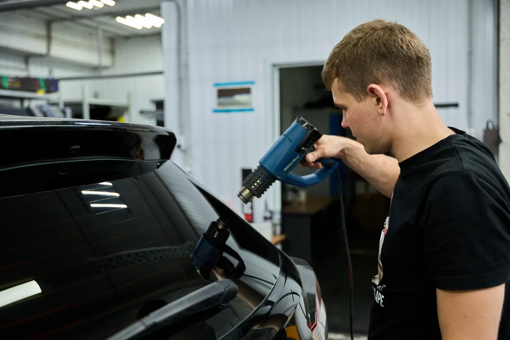
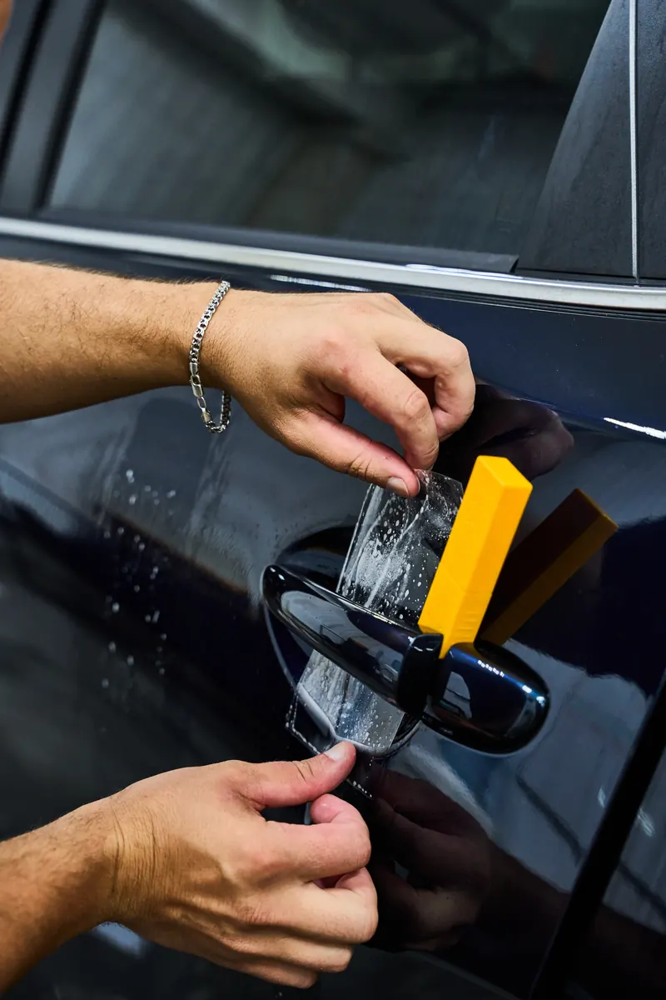
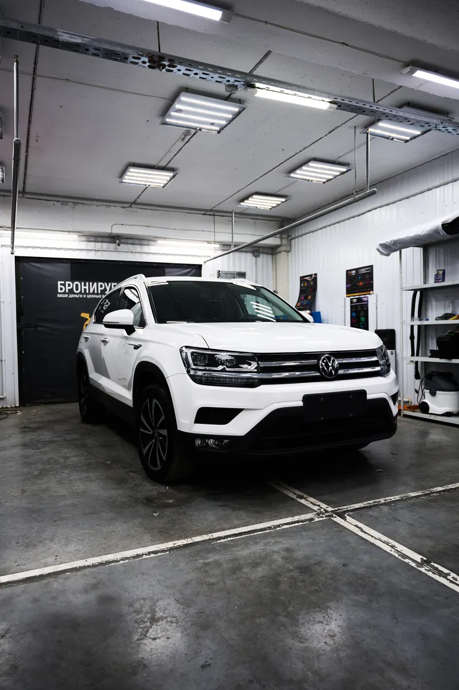

Тонировка фар и фонарей в Казани
Затемняем задние фонари и фары плёнкой — оттенок подбираем под машину и под ваши стёкла. Перед работой рассказываем, что говорят правила.
от 6 000 ₽ · оплата по готовности · фотоотчёт этапов

Тонировка фар — это тонкая плёнка, которую клеят на пластик фонаря. Она делает оптику темнее и собирает внешний вид машины: задние фонари перестают выделяться светлым пятном на тёмном кузове и сочетаются с затонированными стёклами. Тонировка задних фонарей стоит от 6 000 ₽, оплата — после работы.
Тонируем и задние фонари, и передние фары. Чаще выбирают задние: красный свет остаётся красным, а стоп-сигналы и поворотники хорошо видно. С передними фарами правила строже, и об этом мы говорим до начала работы — ниже разобрали, что пишет закон.
Тонировка задних фонарей
Самый частый запрос. Плёнка затемняет корпус фонаря, но не меняет цвет огней: стоп-сигнал горит красным, поворотник — оранжевым. Оттенок выбирают по задаче: лёгкая дымка, когда хочется сгладить яркий хромированный фонарь, или глубокое затемнение под тёмную заднюю полусферу.
Не обязательно затемнять весь фонарь. Можно оставить светлой секцию заднего хода или затонировать только верхнюю часть. После оклейки включаем все режимы и смотрим, как фонарь горит днём и в темноте.
Работаем плёнкой «Азбуки Плёнок» — производитель даёт на материал гарантию 5 лет. Плёнка заодно защищает пластик: мелкий песок и реагенты оставляют следы на ней, а не на корпусе фонаря.
Тонировка передних фар
Затемнённые фары меняют «взгляд» машины сильнее всего. Но плёнка на фаре уменьшает световой поток, а к передней оптике у ПДД самые жёсткие требования. Поэтому на осмотре мы показываем оттенки, рассказываем о рисках и только потом берёмся за работу.
Если задача — уберечь фары от сколов и помутнения, а не затемнить их, подойдёт прозрачная защитная плёнка. Её клеят в рамках бронирования PPF, свет она не меняет.
Можно ли тонировать фары по закону
Отдельной статьи про тонировку фар в законе нет. Инспектор оценивает результат: какого цвета огни и как они работают. Нормы такие: Перечень неисправностей к ПДД запрещает ездить, если цвет или режим работы огней не соответствуют документации производителя (п. 3.1) и если на фаре стоят оптические элементы, которых не предусматривает конструкция (п. 3.6). Красный свет вперёд и белый назад тоже запрещены, кроме фонаря заднего хода и подсветки номера (п. 3.7).
| Что затонировано | Что может решить инспектор | Чем грозит |
|---|---|---|
| Задние фонари, огни остаются красными | Эксплуатация с неисправностью | Предупреждение или штраф 500 ₽ (ч. 1 ст. 12.5 КоАП) |
| Передние фары, свет остаётся белым | Эксплуатация с неисправностью | Предупреждение или штраф 500 ₽ (ч. 1 ст. 12.5 КоАП) |
| Передние фары, свет изменил цвет | Цвет огней не соответствует требованиям | Лишение прав на 6–12 месяцев с конфискацией фар (ч. 3 ст. 12.5 КоАП); за установку таких приборов — штраф 3 000 ₽ (ч. 1 ст. 12.4 КоАП) |
Как поступить, решает владелец машины. Наша задача — заранее объяснить, чем отличаются варианты, и сделать работу так, чтобы огни горели своим цветом.
Не уверены, какой оттенок выбрать? Покажем образцы плёнки на осмотре.
Сколько стоит тонировка фар
| Услуга | Цена |
|---|---|
| Тонировка фар или задних фонарей | от 6 000 ₽ |
Итоговая цена зависит от размера и формы фары или фонаря, от того, затемняем весь фонарь или его часть, и от того, нужно ли снимать старую плёнку. Точную сумму называем после осмотра, оплата — по готовности.
Как проходит работа
- Осмотр и выбор оттенка. Смотрим фонари, показываем образцы, обсуждаем, что затемнить.
- Подготовка. Моем и обезжириваем пластик, снимаем старую плёнку, если она есть.
- Выкройка и оклейка. Режем плёнку по форме фонаря и клеим без пузырей и складок.
- Прогрев кромок. Прогреваем края, чтобы плёнка легла по изгибам и не отходила.
- Проверка. Включаем габариты, стоп-сигналы, поворотники и задний ход, показываем результат.
Пока работаем, присылаем фото этапов в мессенджер.

Уход и снятие плёнки
Первые дни не направляйте мойку высокого давления на края плёнки. Дальше уход обычный. Если плёнка надоест или понадобится вернуть заводской вид, её снимают, и пластик под ней остаётся целым.
Почему тонируют в «Мустанге»
- Больше 3000 машин прошли через студию, опыт мастеров — от 5 лет.
- Рейтинг 5,0 на Авито по 52 отзывам.
- Плёнка «Азбуки Плёнок» с гарантией производителя на материал 5 лет.
- Без предоплаты: платите, когда приняли работу.
- Фотоотчёт каждого этапа в мессенджер.
- Подземная парковка, работаем с 8:30 до 20:30 без выходных.
- В одном месте можно затонировать стёкла и отполировать фары.

Вопросы и ответы
Какой штраф за тонировку задних фонарей?
Если огни остаются красными, инспектор может выписать предупреждение или штраф 500 ₽ по ч. 1 ст. 12.5 КоАП как за эксплуатацию с неисправностью. Лишение прав по ч. 3 касается только передних световых приборов.
Можно ли затонировать передние фары?
Технически да, но это самый рискованный вариант. Если свет фар меняет цвет, грозит лишение прав на 6–12 месяцев. Если свет остаётся белым, возможен штраф 500 ₽. Перед работой рассказываем об этом и показываем оттенки.
Пройдёт ли машина техосмотр с затонированными фонарями?
На техосмотре проверяют цвет и работу огней по требованиям производителя. Затемнение могут посчитать несоответствием, поэтому перед техосмотром плёнку иногда снимают. Заранее обещать результат проверки мы не будем.
Сколько держится плёнка на фонарях?
Мы клеим плёнку «Азбуки Плёнок», на материал действует гарантия производителя 5 лет. Как долго плёнка сохранит вид, зависит от ухода: как машину моют и где она стоит. Плёнку можно заменить, не трогая сам фонарь.
Можно ли потом снять тонировку с фар?
Да. Плёнку снимают, и пластик под ней остаётся целым — заодно он был защищён от песка и реагентов.
Можно затемнить только часть фонаря?
Можно. Например, оставить светлой секцию заднего хода или затонировать только верхнюю часть. Покажем варианты на осмотре.
Запишитесь на тонировку фар — покажем оттенки на осмотре и назовём точную цену.
Запись и контакты
Казань, ул. Аделя Кутуя, 110Д, корп. 4. Ежедневно с 08:30 до 20:30, своя подземная парковка. Телефоны +7 (966) 802-00-10 и +7 (906) 135-00-11 или запись онлайн.
Полезное по теме
Казань, ул. Аделя Кутуя, 110Д, корп. 4 · ежедневно 08:30–20:30 · +7 (966) 802-00-10, +7 (906) 135-00-11 · своя подземная парковка
Другие услуги: